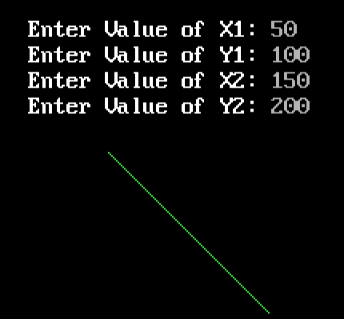

#include<stdio.h>
#include<conio.h>
#include<graphics.h>
void main()
{
int gd = DETECT, gm;
int dx, dy, p, end;
float x1, x2, y1, y2, x, y;
initgraph(&gd, &gm, "c:\\turboc3\\bgi");
printf("Enter Value of X1: ");
scanf("%f", &x1);
printf("Enter Value of Y1: ");
scanf("%f", &y1);
printf("Enter Value of X2: ");
scanf("%f", &x2);
printf("Enter Value of Y2: ");
scanf("%f", &y2);
dx = abs(x1 - x2);
dy = abs(y1 - y2);
p = 2 * dy - dx;
if(x1 > x2)
{
x = x2;
y = y2;
end = x1;
}
else
{
x = x1;
y = y1;
end = x2;
}
putpixel(x, y, 10);
while(x < end)
{
x = x + 1;
if(p < 0)
{
p = p + 2 * dy;
}
else
{
y = y + 1;
p = p + 2 * (dy - dx);
}
putpixel(x, y, 10);
}
getch();
closegraph();
Output:
